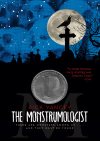

The Monstrumologist is a horror story that takes place in Gothic Colonial America. You follow a young orphan boy, named Will, as he works for a man who studies monsters and how to kill them.
All is running as normal for the duo. Late night calls, macabre disections, and other dark works. However, that all changes when they are given evidence of a monster that risks killing the entire countryside if not exterminated.
 About the Author